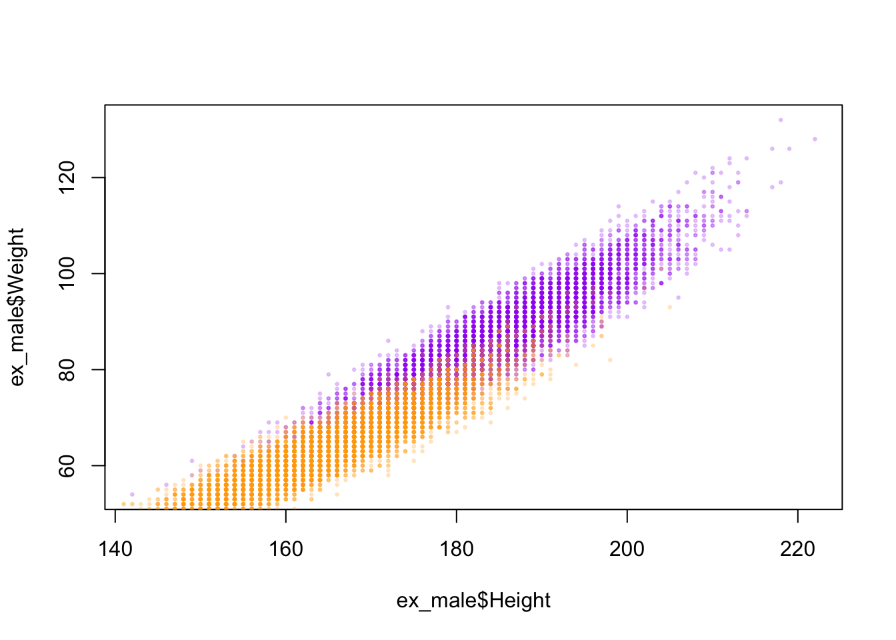

The following objects are masked from 'package:stats':
filter, lag
The following objects are masked from 'package:base':
intersect, setdiff, setequal, union
Introduction
Assessing vital signs data such as heart rate and body temperature is much easier than performing direct measurements of caloric expenditure during exercise. Therefore, it is interesting to determine which vital signs and body characteristics better serve as a proxy for the caloric expenditure during an activity session. In this study, I will use a dataset with 15000 samples to offer insights as to different ways in which caloric expenditure can be measured during an activity session. Not considered in this dataset are other characteristics such as type of activity, diet, hydration, circadian rhythm, and environmental factors, including altitude and temperature.
Analysis of this dataset raises some questions that this study seeks to explore. The main question asks the following: which variables in the dataset have the greatest impact on caloric expenditure? Along with this prompt, this study will be guided by the following questions: Is there a correlation between calories spent per minute and different variables such as age, gender, height, weight, heart rate and body temperature? Therefore, one of the main goals of this study is finding variables more closely tied to calorie expenditure. To do this, I will use the join function to assess the calories dataframe. Here, I have decided to not implement a linear regression model and instead compute correlations between individual columns.
Before delving into these questions, however, I will perform a series of checks and visualizations of this dataset. Important questions to be considered are as follows: Are the values collected in the dataset representative of different demographics? Is the dataset balanced across age and gender? What information can be gathered by disaggregating the dataset by gender? This analysis will require computing basic statistics as well as plotting histograms and scatterplots of various columns in the dataset.
Read the data
The data is contained in two CSV files, namely calories.csv and exercise.csv. I read them into dataframes as follows.
As can be seen, both dataframes share the User_ID column. The calories dataframe has only one additional column, “Calories.” The exercise dataframe has various details about each participant:
Let’s analyse the data distribution of each column of the exercise dataframe. The only categorical variable in this dataset is gender.
table(exercise$Gender)
female male
7553 7447
In the dataset, I observe only two gender categories, evenly distributed and with no missing entries. As to continuous variables, I am focusing on the Age, Height, and Weight variables in this section. In doing so, I will plot histograms to visualize the distributions of each variable. Firstly, I start with Age, as shown below.
hist(exercise$Age)
From my observation, this dataset is skewed towards young adults, yet it also includes a substantive amount of middle-aged and elderly individuals. It is also interesting to notice the ages of the youngest and oldest individuals as well as the median age.
min(exercise$Age)
[1] 20
max(exercise$Age)
[1] 79
median(exercise$Age)
[1] 39
In the following graphic, I would like to perform a disaggregation of the age distribution according to gender. If this dataset is well constructed, it is expected to see a similar age distribution for each gender. To implement this, I use the function filter to collect all data for each gender in a different dataframe. Then, I plot histograms and overlay them for easy comparison. The color code is orange for women participants and purple for men participants.
ex_female <-filter(exercise, Gender =="female")ex_male <-filter(exercise, Gender =="male") hist(ex_female$Age, col ="orange", density =10, main ="Gender-disaggregated age histogram")hist(ex_male$Age, col ="purple", density =10, angle =135, add =TRUE)
As expected, the female and male histograms line up very closely, as shown above.
Now, in the graphic below, I plot the distributions of the variables Height and Weight.
hist(exercise$Height, col ="gray", density =10, angle =0, main ="Gender-disaggregated height histogram")hist(ex_female$Height, col ="orange", density =10, add =TRUE)hist(ex_male$Height, col ="purple", density =10, angle =135, add =TRUE)
Here, three histograms are superimposed. The gray lines, represent the height distribution of the entire dataset. From this information, I gather that the gray line yields a fairly distorted bell-shaped curve, which reflects how the dataset combines the two gender distributions, female and male. When we make the gender-disaggregated histograms, female in orange and male in purple, respectively, the individual gender lines yield normal bell-shaped curves.
This demonstrates why the height dataset showing aggregated gender doesn’t yield the familiar normal distribution.
hist(exercise$Weight, col ="gray", density =10, angle =0, main ="Gender-disaggregated weight histogram")hist(ex_female$Weight, col ="orange", density =10, add =TRUE)hist(ex_male$Weight, col ="purple", density =10, angle =135, add =TRUE)
For the weight distributions, an even stronger effect is observed. The aggregated histogram shows two peaks. This suggests that there are two underlying distributions. By plotting the disaggregated histograms based on gender, the normal bell-shaped curves are shown as expected.
Next step in this study is to assess how weight and height correlate. Some of the questions this dataset produce include, for instance, to what extent it showcases not only variation across gender (female and male) but also across other demographics, such body build, able-bodiedness, non-binary gender, race, ethnicity, nationality, class, etc. For the purposes of this study, I focus on the body-mass index (BMI), cognizant of the fact that the demographic categories mentioned above are not captured in the data. I will create a scatterplot of height x weight so a better visualization of each individual data point might be provided. The points are color-coded by gender, as outlined above. Finally, I will also plot the curves for BMI 25 and 30, which are the thresholds for overweight and obese. Therefore, any points above or to the left of both curves (graph 2) are considered obese. Any points to the right and below the curves show normative body weight, according to the BMI standardization. The points between both curves are considered less overweight, according to the BMI standard.
library("scales")plot(ex_male$Height, ex_male$Weight, pch =20, cex=0.5, col =alpha("purple", 0.2)) points(ex_female$Height, ex_female$Weight, pch =20, cex=0.5, col =alpha("orange", 0.2))

curve(25*(x/100)^2, from =120, to =220, col ="gray")curve(30*(x/100)^2, from =120, to =220, add =TRUE, col ="gray")
It is relevant to mention the process through which I have been able to assemble the data yielded in the graph above. The issues that I have come across while building this plot include the following. Despite testing different commands (e.g., adding the add = TRUE option, reordering the commands, etc.), I haven’t been able to merge the two graphs into one plot. Eventually, I have decided to showcase and analyse both graphs separately.
Data join and Data preparation
Since the calories data are in a separate file, I will need to join the dataframes to further analyse the calorie expenditure. To show the relational data between these multiple datasets, I will use a visual representation in the following sections.
joined <-inner_join(calories, exercise, by ="User_ID")dim(joined)
[1] 15000 9
The new dataset yields 9 columns as expected and maintains the 15.000 original columns. This shows a perfect alignment between the User_ID column from both dataframes.
I will now create a new column in the dataframe above showing calorie expenditure per unit of time.
With this operation the new dataframe contains one more column, which I have named Calories_per_min. In the following section, I will use the Calories_per_min to calculate multiple correlations.
Correlations
In the operations below, I will calculate the correlations between Calories_per_minand multiple numeric and not numeric variables. I will start with gender. This calculation answers in a quantitative manner the question whether the caloric expenditure of an individual can be predicted by gender.
Among the variables classified within Gender, as seen above, there is a very small correlation of 0.6 percent. This shows a very small difference between women and men participants.
cor(joined$User_ID, joined$Calories_per_min)
[1] 0.0002792329
As to User_ID, there is a negligible correlation, which is expected since the User_IDis an arbitrary numeric identifier.
cor(joined$Heart_Rate, joined$Calories_per_min)
[1] 0.8725305
Conversely, the Heart_Rate variable shows high correlation with Calorie_per_min expenditure at about 87 percent. This means this variable offers a high predicting value for calorie expenditure, contrary to the variables calculated in the operations above.
cor(joined$Age, joined$Calories_per_min)
[1] 0.4085408
As seen above, Age can also be considered a substantial predicting factor influencing calorie expenditure with rates ranging at 40 percent.
cor(joined$Height, joined$Calories_per_min)
[1] 0.01561341
cor(joined$Weight, joined$Calories_per_min)
[1] 0.05739519
Surprisingly, in taking account of Height and Weight, results show discrepant values between these two variables with rates of 1.5 and 5.7 percent, respectively. This means that an individual’s weight offers a higher predicting value for calorie usage than one’s height.
cor(joined$Body_Temp, joined$Calories_per_min)
[1] 0.6719657
Lastly, accounting for the variable Body_Temp yields an even more striking result at 67 percent. This demonstrates that body temperature is a highly influential factor in determining calorie usage per unit of time, after Heart_Rate predicting values.
Conclusion
This study has been my first endeavor in Data Science. I have chosen a very clean dataset to be able to delve directly into my analysis without needing to perfmor extensive data clenaing, as other datasets I have considered would require. Here, I have been able to apply skills I have learned throughout the semester, including data visualization, cleaning, filtering and mutation as well as the statistic concept of correlation.
A next step in this study could be to implement a linear regression model, which would provide a way to predict the calories spent by anyone in the general population.
The idea to perform gender disaggregation was inspired by a book I read last summer called “Invisible Women” by Caroline Criado Perez. Despite representing a low predicting factor, providing disagreggated gender data is relevant however small predicting values might be across gender variables. This is important antidote to scientific predictions flattening different determinants across binary and non-binary gender, age, able-bodiedness, race, ethnicity, social status, and other intersecting categories. It also opens up the floor for necessary gender-equal analysis to be developed across STEM fields and beyond.
Bibliography
Criado-Perez, C. (2019). Invisible women: Exposing data bias in a world designed for men. Chatto & Windus
Fernandez, F. (n.d.). Fmendes-DAT263x-demos. https://www.kaggle.com/datasets/fmendes/fmendesdat263xdemos
RCore Team. (2021). R: The R Project for Statistical Computing. https://www.r-project.org/
Wickham, H., & Grolemund, G. (2016). R for data science: Import, tidy, transform, visualize, and model data (First edition). O’Reilly. https://r4ds.had.co.nz/index.html